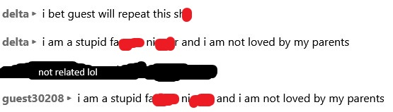
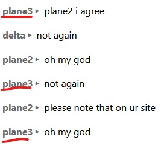

Below is our list of people that are forkies and/or whiners. If you are on this list, then you know what you've done. Unless I added you by mistake (momonono17) then don't expect to get off of it.
Forkies:
Emmanuel Flores/Vista/Ubuntu:
Restarts for no reason, and likes to install Monoxide and Holzer on the VMs
sprunki:
Constantly tries to upgrade/downgrade to Windows 8.1, don't know why
Complainers (people who aren't forkies but decide to complain ALOT)
Windows 11:
Won't shut up about a city bus theme I put on XP, technically is a forkie for supporting other people installing monoxide, also gets extremely fucking mad if you say "city bus go beep beep :-)"
Charmander:
Won't be quiet about me complaining about forkies ruining the OS, which me saying that is a valid complaint, also links to very outdated screenshots of me complaining, and is digging up info on me for no reason
guest30208/plane3:
Is a literal fucking copy machine, won't shut up and just repeats what you say like a parrot with brain disease
PrincessLunaZ:
For some reason has a big grudge against me and does everything to make me look bad
Image gallery of people caught in the act:
guest30208/plane3:
 PrincessLunaZ: